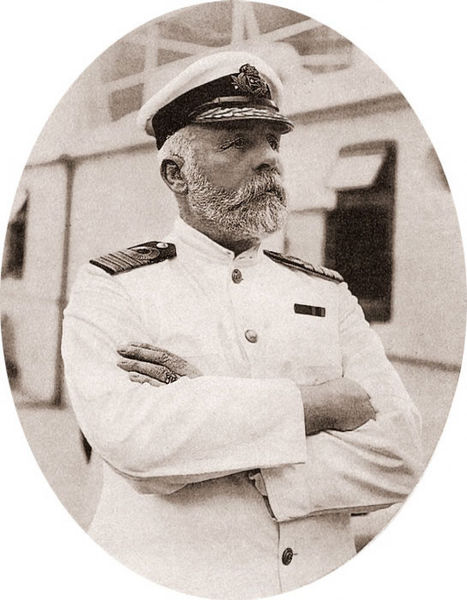

.jpg)
Edward John Smith Hanley'de Edward Smith ve Catherina Hancock'in çocuğu olarak dünyaya geldi. 13 yaşına kadar Etruria İngiliz okuluna devam etti ve ardından Liverpool'da denizcilik kariyerine başladı. Daha sonra A Gibson şirketinin sahibi olduğu Senator Weber 'de ilk denizcilik kariyerine başladı, çıraklık dönemini Weber'de geçirdi.
Smith, Mart 1880'de, White Star Line'a Celtic'in dördüncü subayı olarak katıldı. Avustralya ve New York hatlarında uzun dönem çalıştı. 1887'de Smith ilk White Star komutasını SS Republic ile devraldı.
White Star Line'da 17 adet gemiye kaptanlık ettikten sonra R.M.S Titanic'e kaptan olarak atandı. Titanic'in ilk yolculuğu için White Star'in en güvendiği isimlerden biriydi.
Titanic'in batışı ile ilgili olarak, Kaptan Smith'in bir ihmalinin olup olmadığı hususu günümüze kadar tartışılan bir konu haline gelmiştir. Smith'in bu olaydaki ihmaller zincirine katkısı ile ilgili çok fazla iddia mevcuttur, Kaptan tarafında bir zaafiyet mevcut olsa bile aşağıdaki faktörlerde gözden kaçırılmamalıdır.
Titanic boyut olarak çok büyük bir gemidir, zamanına göre ciddi teknolojik üstünlüklere sahiptir, kompartımanlar arasında su geçirmez levhalar yerleştirilmiş ve batmaz gemi olarak lanse edilmiştir.
Özellikle Atlantik'de kritik mesajlar köprüye iletilememiştir.
Titanic'in imal edildiği çelik metallerin çok kırılgan olduğu görüşü de birçok uzman tarafından ifade edilmiştir.
Titanic 'in çarpmasından sonra ,Kaptan Smith'in nasıl öldüğüde çok netliğe kavuşamamıştır. Ballard'a göre Titanic filmindede görüldüğü gibi, köprüye gittiği, son emri vermek için beklediği ve Atlantiğin buzlu sularında kaybolduğu söylenmektedir.
Başka bir iddiaya göre ise Kaptan silahını kafasına dayamış ve tetiği çekmiştir. Bu inanılması zor olayın ardından kurtulanlar, kaptan John Smith'in gemi batmadan önce bir çocuğu filikalara kadar götürüp, geri kaptan köşkünde öldüğü söylenilmektedir .